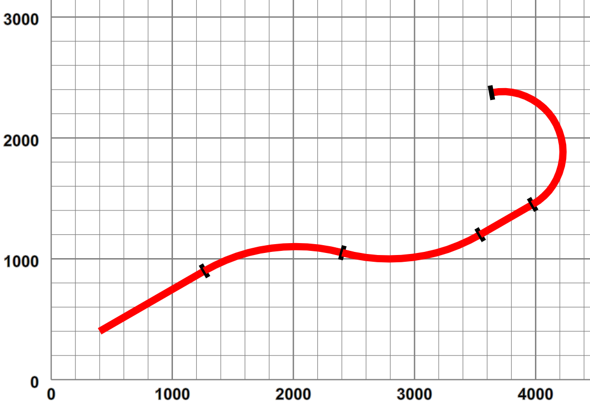
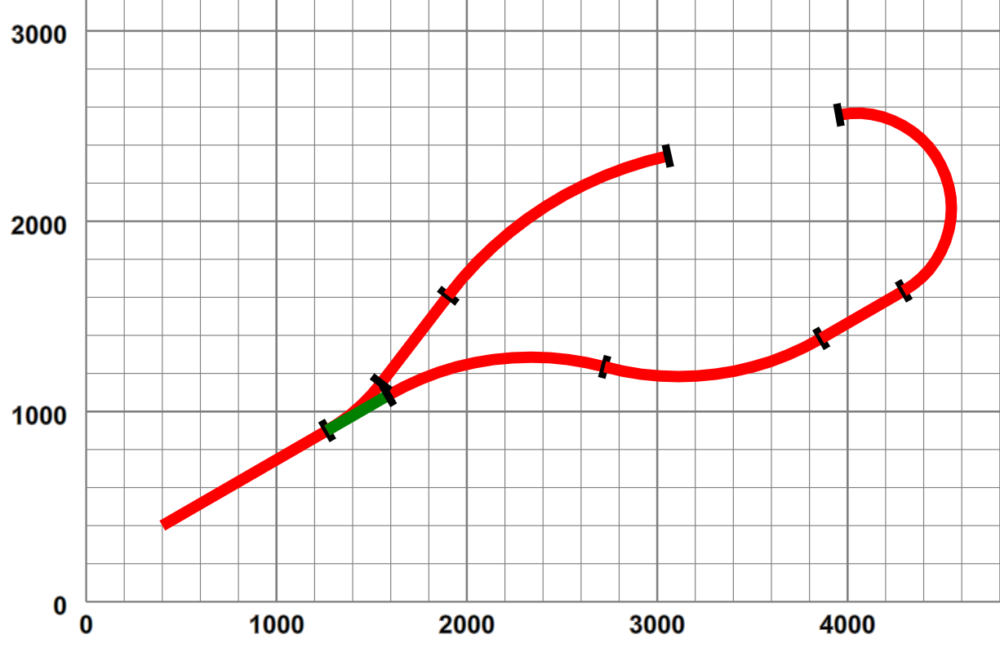
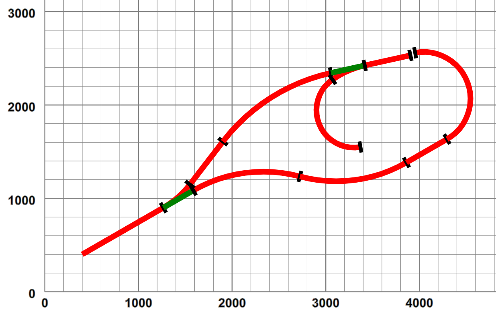

The original motivation was as a tool to design my planned garden railway, in terms of a connected set of track components that satisfied the requirements of i) being constructed from obtainable parts and ii) lay within the limits of bend curvature and track gradient that were recommended for such railways. For the present, given the flat nature of the garden, apart from the step between sections, vertical gradients have been ignored — how they could be added is discussed later.
I considered attempting a “drag and drop” style of interaction, but decided against this, especially as all straights and curves could be “freeform” so a small set of track parts wasn't really appropriate. The starting point was a choosing an XML representation that focussed on continuous sequences of track components, describing the “main line”, implemented as a sequence of elements, such as:
Example 1. A simple layout
<layout name="simple"> <start x="400" y="400" orient="30"/> <straight name="section1" length="1000"/> <curve r="1500" angle="-45"/> <curve r="1500" angle="45"/> <straight length="500"/> <curve r="500" length="1400"/> </layout>
which defines a layout simple that contains one section section1. This starts at the point (400,400) with an orientation of +30° from the positive X axis. The first section is a 1000 long[14] straight, preserving orientation, followed by a circular arc curve, of radius 1500, turning left though a positive angle of 45°, followed by a similar right turn, a short straight and a tighter left-hand bend defined by radius and curve length, rather than angle. When plotted out this section looks like:
Figure 3. Simple layout - pictorially
|  |
Circular arcs were chosen as the only curve representation as i) they support a design method of “turn this tightly for x degrees”, ii) they are supported directly in SVG and iii) their geometry is simple to calculate. Polynomial splines could have been used, but they are difficult to define in terms of curve length. In real railway engineering, curves are defined by Cornu spirals - where the curvature (1/radius) is a piecewise linear function of arc length — lateral (centripetal) acceleration increases at a uniform rate as a train moves along such a curve at constant speed. SVG alas does not support such curves.
Layouts that have such a simple topology (a single contiguous section) tend to be somewhat boring. Alterative routes involve switching between different sections joined by points[15]. In our layout definition a point is represented as an element, whose child is the “branch line”:
Example 2. A simple branch line
<layout name="simplePoint" start="section1">
<start x="400" y="400" orient="30"/>
<straight name="section1" length="1000"/>
<point id="P1" radius="small" turn="left">
<spur>
<straight name="branch1" length="580"/>
<curve r="2000" angle="-40"/>
</spur>
</point>
<curve name="section2" r="1500" angle="-45"/>
<curve r="1500" angle="45"/>
<straight length="500"/>
<curve r="500" length="1400"/>
</layout>The branch line itself is defined by a spur element, whose children define a set of sections. The point defines its type,
in this case a small radius point and its handedness — here the branch turns off to the left. This layout looks like:
Figure 4. Simple branch line - pictorially
|  |
The point obviously has two possible paths, one straight on, the not-set track, shown in green, and the turning branch, the set track. The layout now consists of three sections, section1 leading up to the point P1, followed by section2 as the mainline and branch1 on the branch.
This “tree” representation can obviously be extended, such as adding a point on the branch line, with a sub-branch line such as:
Example 3. A layout with two points
<layout name="twoPoints" start="section1">
<start x="400" y="400" orient="30"/>
<straight name="section1" length="1000"/>
<point id="P1" radius="small" turn="left">
<spur>
<straight name="branch1" length="580"/>
<curve r="2000" angle="-40"/>
<point id="P2" radius="small" dir="trailing" turn="left">
<spur>
<curve r="400" angle="155"/>
</spur>
</point>
<straight length="500"/>
</spur>
</point>
<curve name="section2" r="1500" angle="-45"/>
<curve r="1500" angle="45"/>
<straight length="500"/>
<curve r="500" length="1400"/>
</layout>which looks like:
Figure 5. Two points pictorially
|  |
Observant readers will note that the new point has been added in technically a trailing condition, i.e. proceeding from the start it is only possible to enter the siding in reverse[16]. This leads us on to considerations of representing the layout topology.